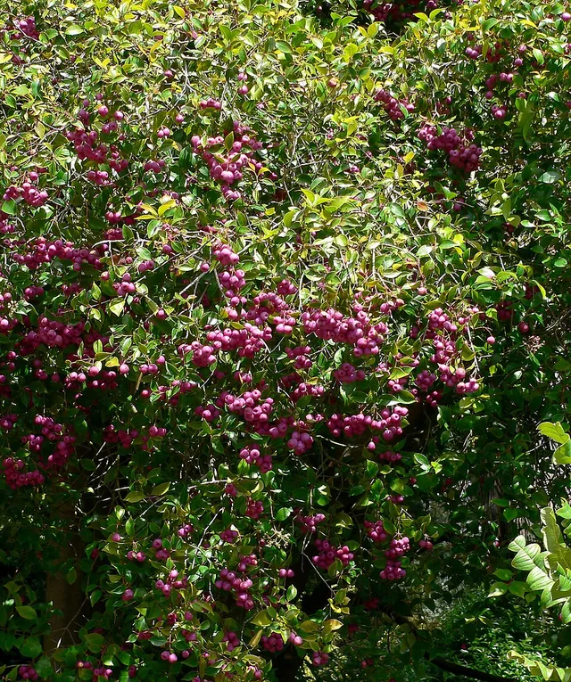
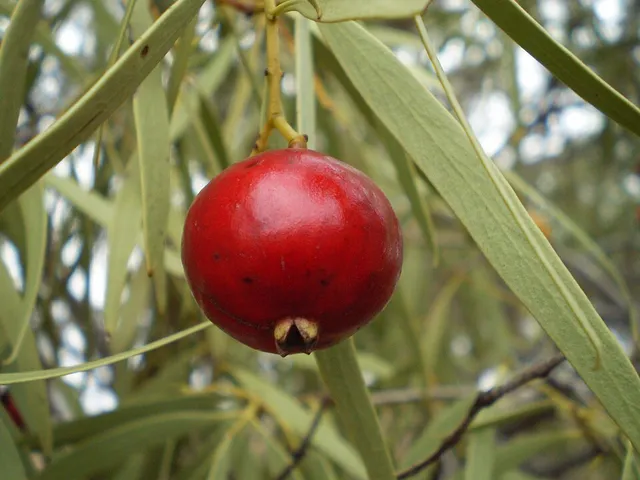
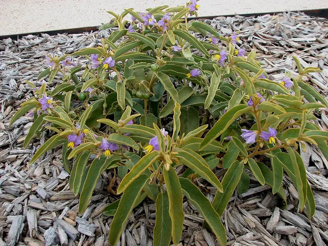

Wild food recipes from Australia
22 dishes made with foraged ingredients, from drinks and preserves to mains and desserts.
Drinks
 Lemon myrtle iced teaLemon myrtle
Lemon myrtle iced teaLemon myrtle
Lilly pilly cordialLilly pilly Desert lime cordialDesert lime
Desert lime cordialDesert lime Kakadu plum juiceKakadu plum
Kakadu plum juiceKakadu plum River mint teaRiver mint
River mint teaRiver mint
Starters & snacks
 Oysters with finger limeFinger lime
Oysters with finger limeFinger lime Saltbush chipsOld man saltbush
Saltbush chipsOld man saltbush Roasted bunya nutsBunya nut
Roasted bunya nutsBunya nut Steamed mussels with river mintMussels, River mint
Steamed mussels with river mintMussels, River mint
Sauces, preserves & sides
 Davidson's plum jamDavidson's plum
Davidson's plum jamDavidson's plum
Quandong chutneyQuandong Warrigal greens pestoWarrigal greens
Warrigal greens pestoWarrigal greens Pickled samphireSamphire
Pickled samphireSamphire
Main course
- Warrigal greens and feta pieWarrigal greens
- Saltbush lambOld man saltbush

Bush tomato kangarooDesert raisin, Mountain pepper
 Wattleseed damperWattleseed
Wattleseed damperWattleseed Macadamia and wattleseed ice creamMacadamia, Wattleseed
Macadamia and wattleseed ice creamMacadamia, Wattleseed